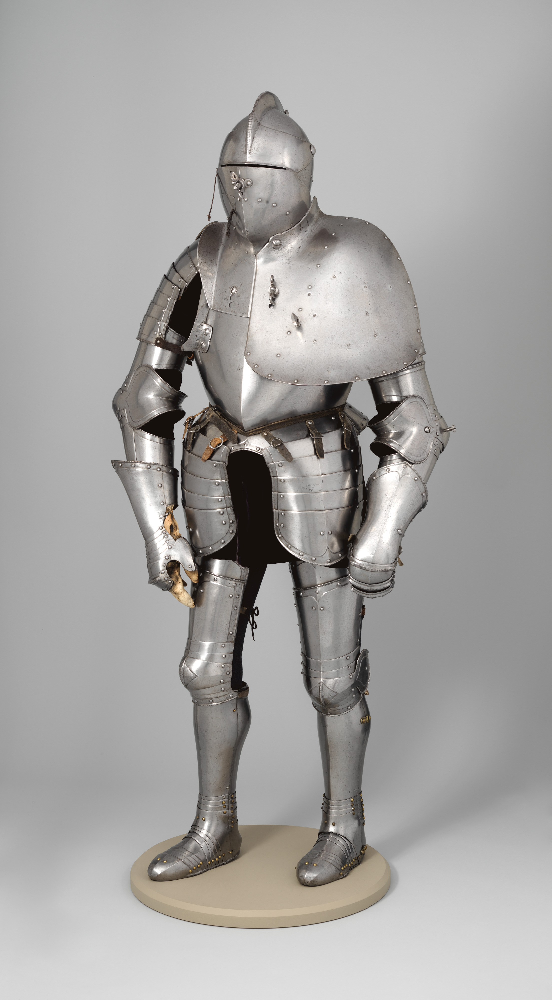
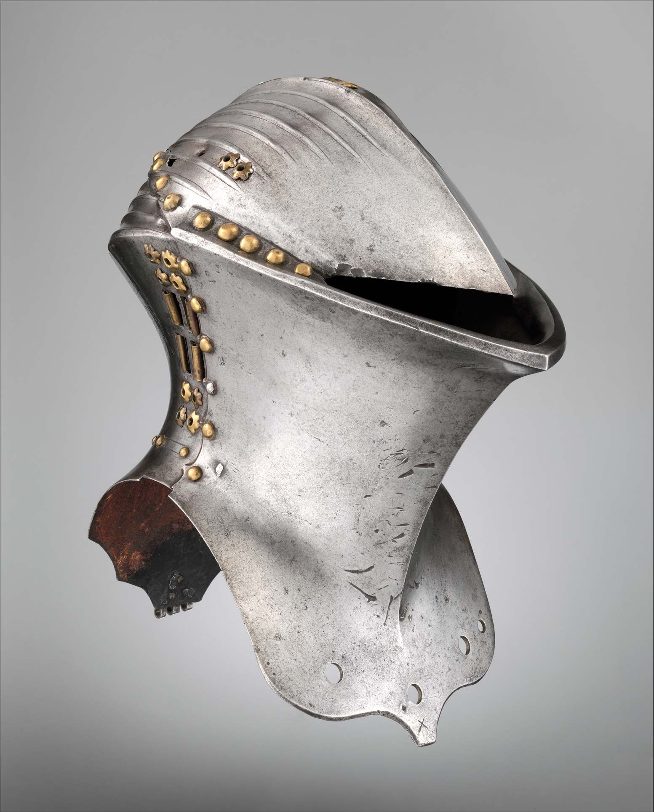
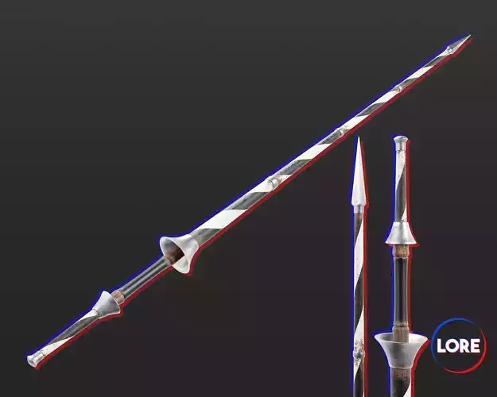
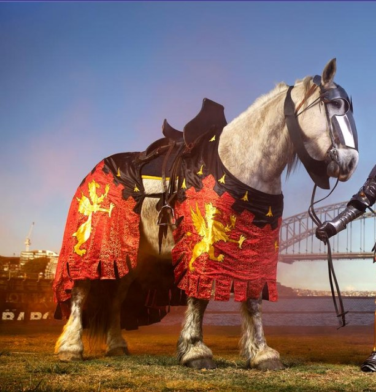

| Perlengkapan | Penjelasan |
|---|---|
|
Armor (Zirah)  |
Armor untuk jousting biasanya lebih tebal dibandingkan armor untuk perang biasa. Bagian dada dan bahu diperkuat karena menjadi titik benturan utama. Armor dibuat dari baja dan harus menyesuaikan tubuh ksatria agar tetap seimbang ketika menunggang kuda. Dalam turnamen, armor sering dihias dengan simbol keluarga untuk menunjukkan identitas bangsawan. |
|
Helm Turnamen  |
Helm yang paling sering digunakan adalah frog-mouth helm, yaitu helm dengan celah penglihatan kecil untuk melindungi wajah dari tombak. Bentuknya dirancang agar benturan frontal dapat terpantulkan. Meskipun mengurangi jarak pandang, helm jenis ini memberikan perlindungan terbaik saat dua ksatria saling beradu kecepatan. |
|
Lance (Tombak)  |
Tombak jousting terbuat dari kayu ringan seperti poplar atau cemara. Ujungnya dibuat tumpul dan sering kali dibuat agar mudah patah ketika terkena benturan kuat. Hal ini bertujuan untuk mengurangi risiko cedera serius. Panjang tombak bisa mencapai 3 meter lebih dan memerlukan kekuatan serta keseimbangan tinggi untuk mengarahkannya tepat ke target lawan. |
Perisai
|
Perisai berfungsi sebagai pelindung sekaligus target utama tombak lawan. Pada turnamen resmi, perisai dihiasi lambang keluarga, warna kebangsawanan, atau simbol kehormatan lainnya. Selain melindungi tubuh bagian atas, perisai membantu ksatria menjaga keseimbangan saat menerima benturan dari arah lawan. |
|
Kuda Turnamen  |
Kuda yang digunakan disebut destrier, yaitu kuda perang besar dan kuat yang dilatih untuk tetap berlari lurus di lintasan. Kuda turnamen biasanya menggunakan pelindung ringan untuk kepala dan dada. Selain itu, kuda harus mampu tetap tenang meski berada sangat dekat dengan lawan dan mendengar suara benturan keras dari tombak yang patah. |